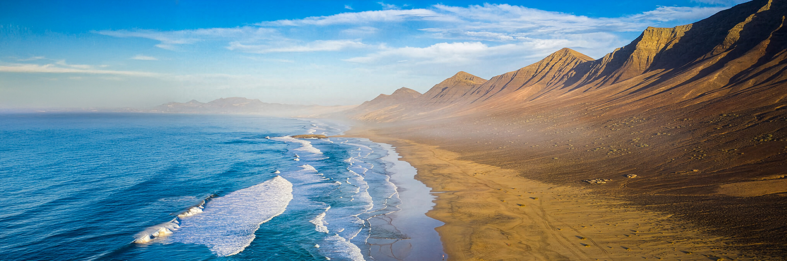
The island where the Sahara meets the Atlantic
Fuerteventura is the oldest of the Canary Islands — a place where volcanic rock crumbles into golden dunes, where wild beaches stretch to the horizon, and where silence still exists. These are the landscapes that make this island unforgettable.
Where the Atlantic crashes against ancient stone
Wild and immense, backed by the dramatic Jandía mountains. The most remote beach on the island, where the Atlantic stretches to infinity and the world falls silent.
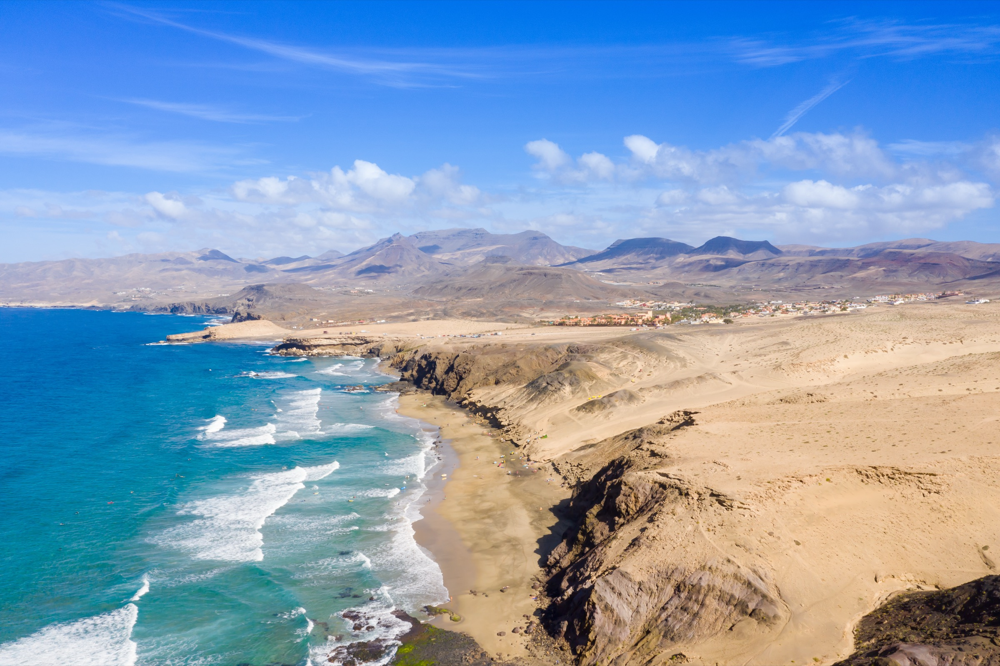
A wild surf beach where the west coast cliffs drop into turquoise water and golden sand. Famous for sunsets that set the entire sky ablaze — the kind you remember for years.
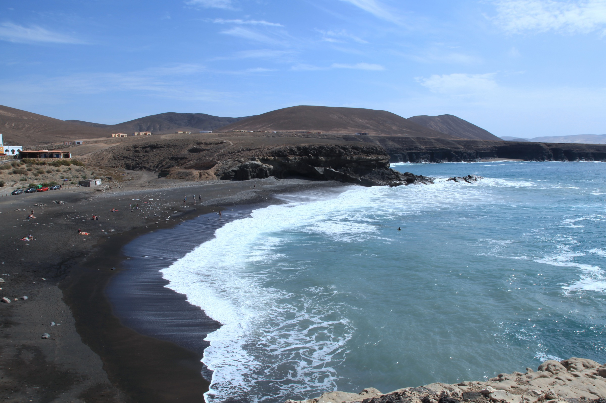
Ancient sea caves carved into volcanic cliffs where the oldest rock on Fuerteventura meets the ocean. A dramatic black sand beach frames the entrance to geological time itself.
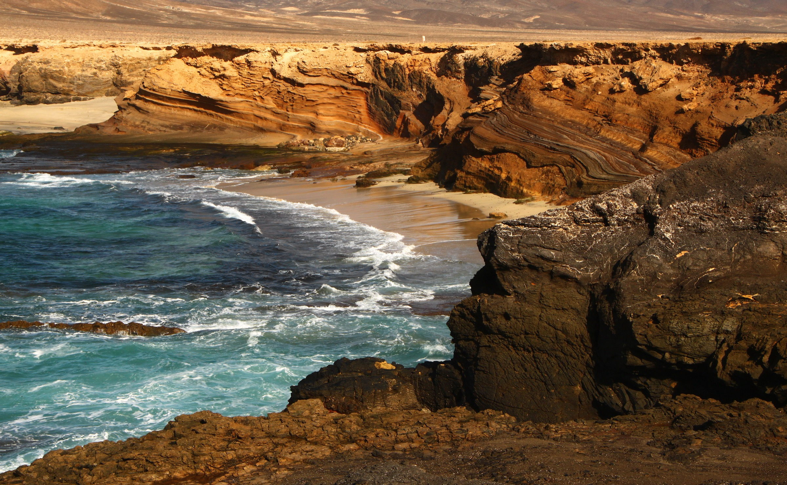
Sand, light and turquoise water
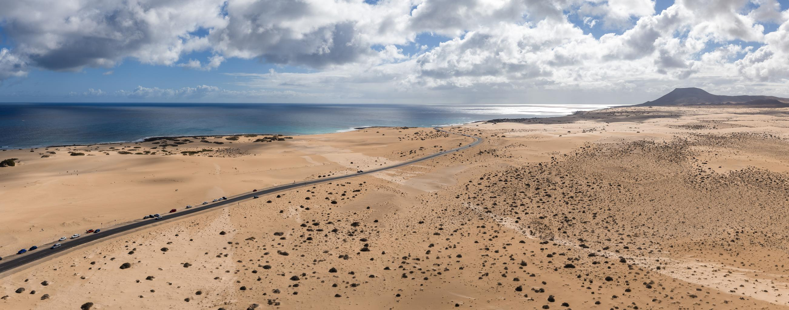
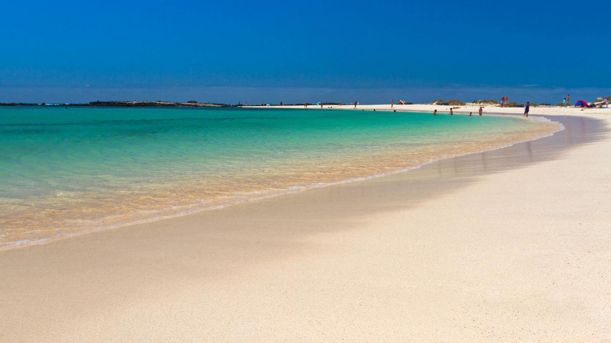
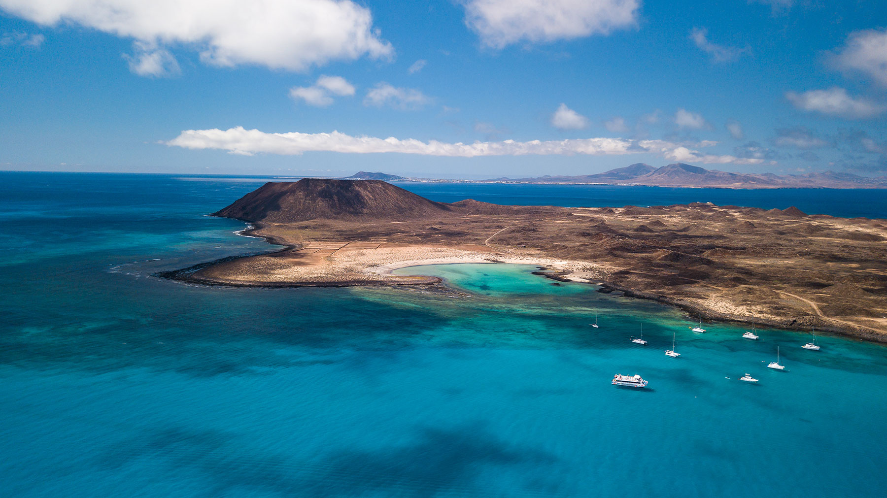
Twenty million years of wind, fire and ocean shaped this island into something that no photograph can fully capture — you have to stand here, feel the trade wind on your skin, and see it for yourself.
The ancient spine of the island
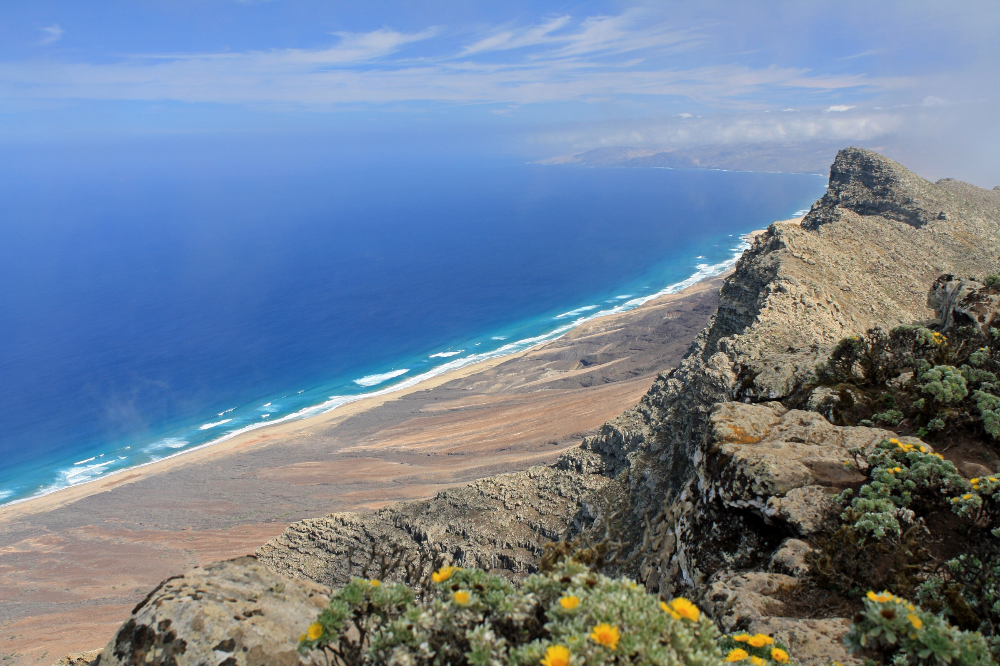
At 807 metres, the highest point on Fuerteventura. The hike to the summit rewards you with a view that stretches to the edge of the world — Cofete Beach, the wild Jandía coast, and the infinite Atlantic below.
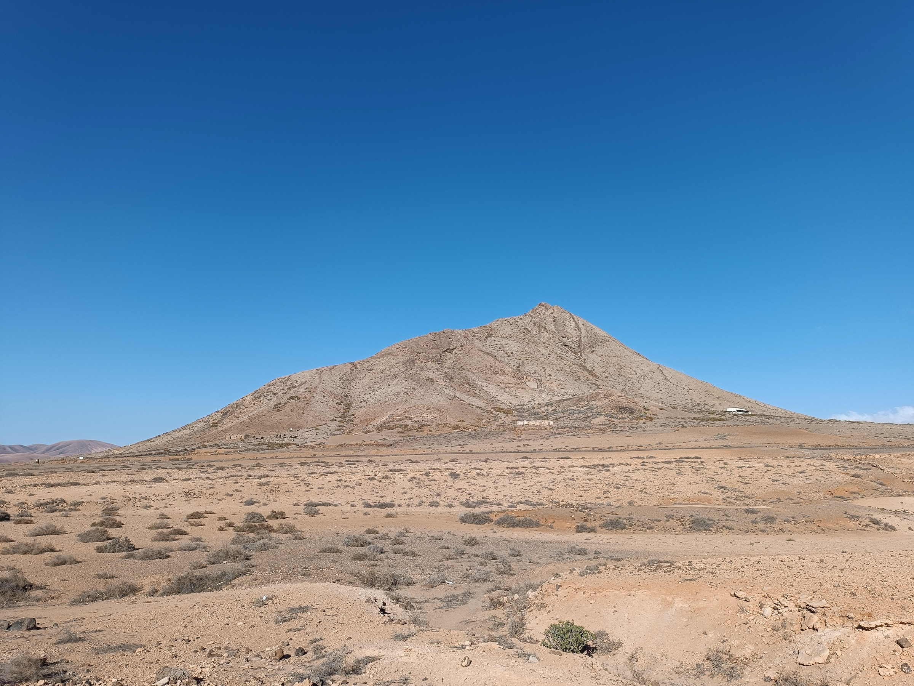
The sacred mountain of the ancient Mahos, rising from the flat northern plain like a sentinel. Its slopes still bear mysterious foot-shaped carvings — podomorfos — left by the island's first inhabitants over a thousand years ago.
Where time moves at a different pace
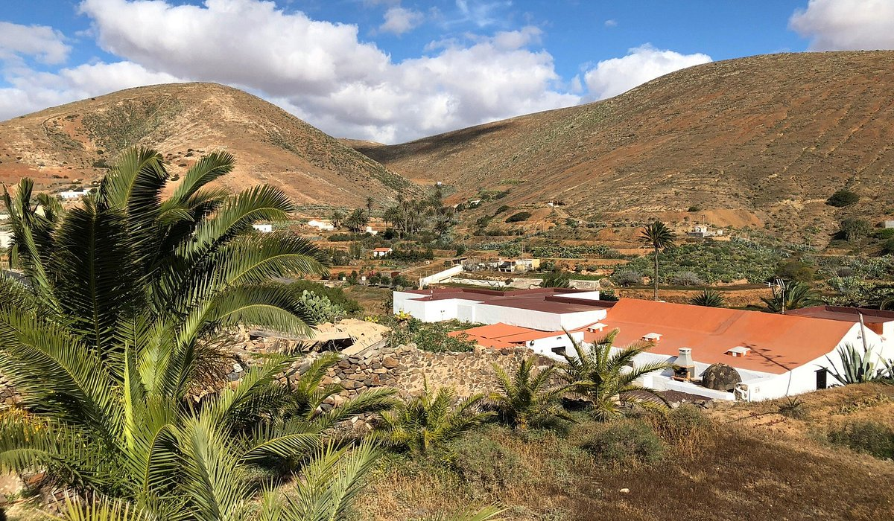
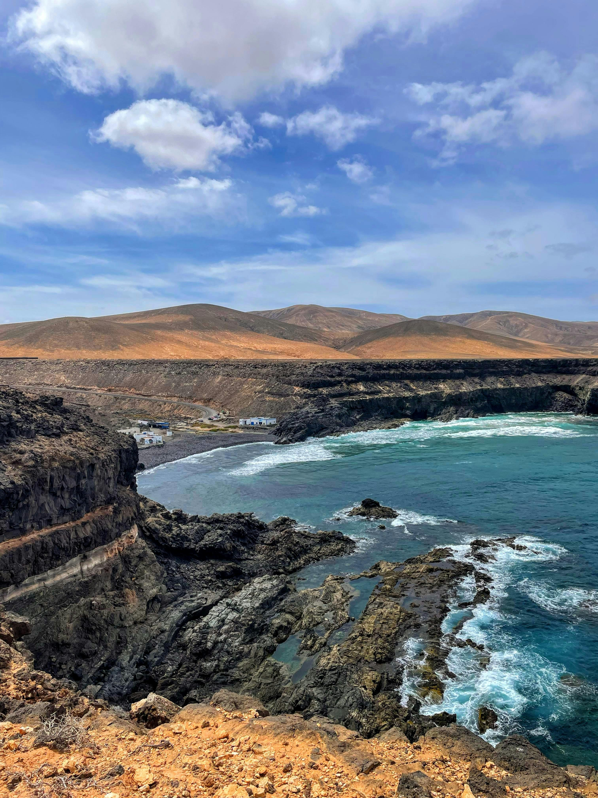
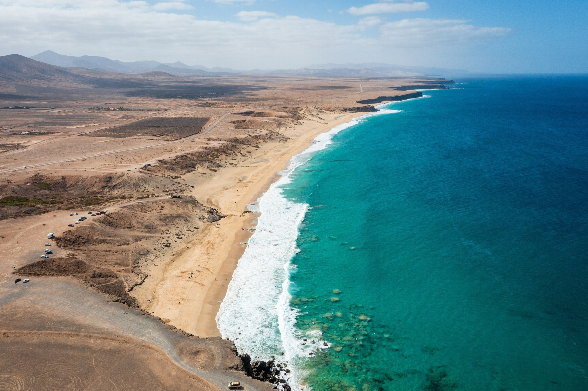
Villa Victorina sits in El Roque, just minutes from El Cotillo's lagoons and within reach of every landscape on this page. Wake up to the trade wind, step outside, and discover an island that still has the power to astonish.